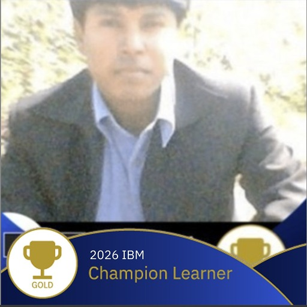

Hello, I am25+ years building secure, scalable systems. I secure AI/GenAI workloads and run the cloud-native infrastructure (AWS, Kubernetes, OpenShift) they depend on.
↓I started as a Java/Spring developer in 2001 and grew into DevOps, cloud architecture and MLOps at IBM, working for clients such as Westpac (AUS), Audi (UK), Barclays (UK), STC (Riyadh), Syniverse (USA), Toyota (USA), Vodafone (UK) and Citi Bank (USA). I have led teams of 40+ engineers in banking, finance and telecom, and today work as an AI Infrastructure Architect and AWS Cloud Architect at IBM, focused on making AI systems secure, compliant and production-ready.